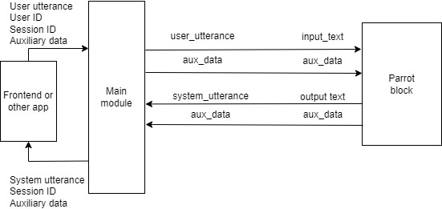
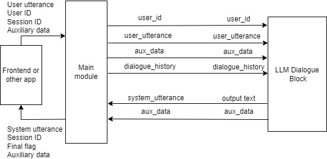
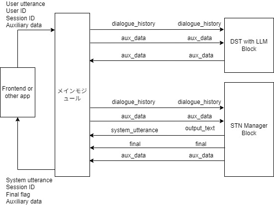
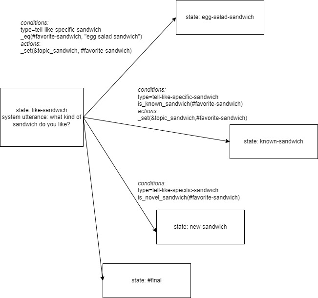
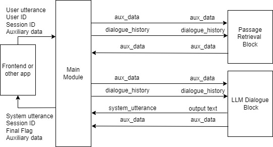

3. Tutorial
3.1. Introduction
DialBB comes with several sample applications. In this chapter, we use the English sample applications to explain the structure of a DialBB application and how to build an application with DialBB.
For instructions on how to run these applications, see README.
3.2. Parrot Sample Application
3.2.1. Description
This application simply repeats what the user says. It does not use any built-in block classes.
It is located in sample_apps/parrot.
sample_apps/parrot/config.yml is the configuration file that defines this application, and its contents are as follows.
blocks:
- name: parrot
block_class: parrot.Parrot
input:
input_text: user_utterance
input_aux_data: aux_data
output:
output_text: system_utterance
output_aux_data: aux_data
final: final
blocks is a list of configurations for the blocks used in this application. We call these block configurations. This application uses only one block.
name specifies the name of the block. It is used in logs.
block_class specifies the class name of the block. An instance of this class is created, and it exchanges information with the main module. The class name is written as a relative path from the configuration file or as a relative path from the dialbb directory.
A block class must be a subclass of dialbb.abstract_block.AbstractBlock.
input defines how information is received from the main module. For example,
input_text: user_utterance
means that blackboard['user_utterance'] in the main module can be referenced as the input_text element in the dictionary argument of the block class’s process method.
output defines how information is sent to the main module. For example,
output_text: system_utterance
means that blackboard['system_utterance'] in the main module is overwritten or added using the output_text element of the dictionary returned by the block class’s process method.
This can be illustrated as follows.

For the symbols above the arrows connecting the main module and the block, the symbol on the left is the key in the main module’s blackboard, and the symbol on the right is the key in the block’s input or output.
You can also look at sample_apps/parrot/parrot.py to understand the concept of a block class in DialBB more concretely.
3.2.2. Debug Mode
As shown below, setting the environment variable DIALBB_DEBUG to yes enables debug logging.
export DIALBB_DEBUG=yes; dialbb-server sample_apps/parrot/config.yml
This causes detailed logs to be output to the console, which should help you understand the behavior more deeply.
3.3. LLM Dialogue Application
3.3.1. Description
This application uses LLM Dialogue (LLM-based Dialogue Block) to conduct dialogue with a single prompt template and a large language model (LLM).
It is located in sample_apps/llm_dialogue_en.
The contents of sample_apps/llm_dialogue_en/config.yml are as follows.
# Configuration file for an LLM-based English application
blocks:
- name: llm_dialogue
block_class: dialbb.builtin_blocks.llm_dialogue.LLMDialogue
input:
dialogue_history: dialogue_history
aux_data: aux_data
output:
system_utterance: system_utterance
aux_data: aux_data
final: final
user_name: User
system_name: System
first_system_utterance: "Hello! Let's talk about food. What kind of cuisine do you like?"
prompt_template: prompt_template.txt
model: gpt-5.4-nano
# temperature: 0.7
The exchange of information between the main module and the block is illustrated as follows.

In addition to input and output, several other parameters are set in the block configuration.
prompt_template specifies the template for the prompt used to generate system utterances.
The contents of sample_apps/llm_dialogue_en/prompt_template.txt are as follows.
# Task Description
- You are a dialogue system and are chatting with the user on food. Please generate next system utterance in less than 30 words.
# Your persona
- Emma
- female
- likes chocolates and wines
- working for an IT company
- very friendly and extrovert
# Situation
- You first met the user.
- The user and you are in the same age group
- The user and you talk friendly
# The flow of dialogue
- Introduce each other
- Tell the user that you like Italian food
- Ask the user if se/he likes Italian food
- If the user likes Italian, ask the user which kind of Italian food she/he likes
- If the user doesn't like Italian, ask her/him why.
# Notes
- Do not begin your responses with your name or "User".
- Do not use quotation marks.
[[[
{notes}
]]]
The dialogue history up to that point is appended to this prompt template and sent to the LLM to generate the system utterance.
The following part is normally not used and is removed. A detailed explanation is omitted.
[[[
{notes}
]]]
3.3.2. Building an Application by Reusing the LLM Dialogue Application
To build a new application by reusing this application, do the following.
Copy the entire
sample_apps/llm_dialogue_endirectory. It may be copied to a directory completely unrelated to the DialBB directory.Edit
config.ymlandprompt_template.txt. You may also rename these files.Start it with the following command.
dialbb-server <configuration file>
3.4. DST-STN Application
3.4.1. Description
This application uses the following built-in blocks and includes a variety of functions.
It is located in sample_apps/dst_stn_en.
The contents of sample_apps/dst_stn_en/config.yml are as follows.
# Configuration for the English experimental application
language: en
system_name: "sandwich bot"
blocks:
- name: dst
block_class: dialbb.builtin_blocks.dst_with_llm.DST
input:
dialogue_history: dialogue_history
aux_data: aux_data
output:
aux_data: aux_data
knowledge_file: dst_knowledge_en.xlsx
gpt_model: gpt-5.4-nano
flags_to_use:
- 'Y'
- 'T'
- name: manager
block_class: dialbb.builtin_blocks.stn_management.Manager
knowledge_file: dst_stn_en_senario.xlsx
function_definitions: scenario_functions
scenario_graph: yes
input:
dialogue_history: dialogue_history
dst_result: dst_result
aux_data: aux_data
output:
output_text: system_utterance
final: final
aux_data: aux_data
repeat_when_no_available_transitions: yes
input_confidence_threshold: 0.5
confirmation_request:
function_to_generate_utterance: generate_confirmation_request
acknowledgement_utterance_type: "yes"
denial_utterance_type: "no"
#utterance_to_ask_repetition: "could you say that again?"
ignore_out_of_context_barge_in: yes
reaction_to_silence:
action: repeat
flags_to_use:
- 'Y'
- 'T'
llm:
model: gpt-5.4-nano
# temperature: 0.7
situation:
- You are a dialogue system and chatting with the user.
- You met the user for the first time.
- You and the user are similar in age.
- You and the user talk in a friendly manner.
persona:
- Your name is Yui
- 28 years old
- Female
- You like sweets
- You don't drink alcohol
- A web designer working for an IT company
- Single
- You talk very friendly
- Diplomatic and cheerful
cautions:
- Do not generate long sentences
- Do not put period at the end of sentences
The exchange of information between the main module and the block is illustrated as follows.

3.4.2. Files That Make Up the Application
The files that make up this application are located in the sample_apps/dst_stn_en directory. That directory contains the following files and directories.
config.ymlThe configuration file that defines the application.
dst_knowledge_en.xlsxThe file that describes the knowledge used by the DST with LLM block.
dst_stn_en_senario.xlsxThe file that describes the knowledge used by the STN Manager block.
scenario_functions.pyThe program used by the STN Manager block.
test_requests.jsonA file containing example requests for testing, including speech-input-related metadata such as confidence scores, barge-in, long silence, rewind, and stop-dialogue flags.
simulationA directory containing files for simulation-based testing.
3.4.3. DST with LLM Block
3.4.3.1. Slot Extraction Results
The DST with LLM block extracts slots from the dialogue so far. The slot extraction result consists of a set of slot name and slot value pairs.
For example,
System: What kind of sandwich do you like?
User: I like roast beef sandwiches.
produces the following slot extraction result.
{
"favorite-sandwich": "roast beef sandwich"
}
Here, favorite-sandwich is the slot name, and its value is roast beef sandwich.
3.4.3.2. Slot Extraction Knowledge
The knowledge used by the DST with LLM block is written in dst_knowledge_en.xlsx. A brief explanation is given below.
Slot extraction knowledge consists of the following two sheets.
Sheet name |
Content |
|---|---|
dialogues |
Examples of pairs of dialogues and slot extraction results |
slots |
Relationships between slots and entities, and a list of synonyms |
Part of the dialogues sheet is shown below.
flag |
dialogue |
slots |
|---|---|---|
Y |
System: What kind of sandwich do you like? |
favorite-sandwich=roast beef sandwich |
Y |
System: What kind of sandwich do you like? |
favorite-sandwich=egg salad sandwich |
The first row means that the slot extraction result from the dialogue in the dialogue column is as follows.
{
"favorite-sandwich": "roast beef sandwich"
}
The flag column is used to specify in the configuration whether that row should be used.
Next, part of the slots sheet is shown below.
flag |
slot name |
entity |
synonyms |
|---|---|---|---|
Y |
favorite-sandwich |
roast beef sandwich |
roast beef, roast beef sandwiches |
Y |
favorite-sandwich |
egg salad sandwich |
egg salad sandwiches, Egg Salad |
Y |
favorite-sandwich |
chicken salad sandwich |
chicken salad sandwiches |
The slot name column is the slot name, entity is the slot value, and synonyms is a list of synonyms.
For example, the first row means that if a value such as roast beef or roast beef sandwiches is obtained as the slot value for favorite-sandwich, it is replaced with roast beef sandwich in the slot extraction result.
When the application starts, examples are created from this knowledge and embedded into the LLM prompt. At runtime, the dialogue history is added to the prompt and slot extraction is performed.
3.4.4. STN Manager Functions
3.4.4.1. Overview
The STN Manager block performs dialogue management and language generation using a State Transition Network (STN). An STN is also called a scenario. The scenario is written in the scenario sheet of the dst_stn_en_senario.xlsx file. For details on how to write this sheet, see Section 5.4.2.
3.4.4.2. Scenario Description
Part of the scenario description is shown below.
flag |
state |
system utterance |
user utterance example |
conditions |
actions |
next state |
|---|---|---|---|---|---|---|
Y |
like-sandwich |
What kind of sandwich do you like? |
I like egg salad sandwiches. |
#favorite-sandwich==”egg salad sandwich” |
_set(&topic_sandwich, #favorite-sandwich) |
egg-salad-sandwich |
Y |
like-sandwich |
I like roast beef sandwiches. |
is_known_sandwich(#favorite-sandwich) |
_set(&topic_sandwich, #favorite-sandwich) |
known-sandwich |
|
Y |
like-sandwich |
I like tuna sandwiches. |
is_novel_sandwich(#favorite-sandwich) |
_set(&topic_sandwich, #favorite-sandwich) |
novel-sandwich |
|
Y |
like-sandwich |
Any sandwich is fine with me. |
#final |
Each row represents one transition.
The flag column, as with slot extraction knowledge, is used to specify in the configuration whether that row should be used.
The state column is the name of the source state, and the next state column is the name of the destination state.
The system utterance column is the system utterance output in that state. The system utterance is associated with the value in the state column on the left, independently of the transition in that row.
The user utterance example column gives an example utterance expected for that transition. It is not actually used.
The conditions column represents the conditions for the transition. A transition’s conditions are satisfied when the conditions column is empty, or when all conditions in the conditions column are satisfied.
These conditions are checked in order from the transition written at the top.
A row whose conditions column is empty is called a default transition. In principle, each state needs one default transition, and it must be the bottommost row among the rows whose source is that state.
3.4.4.3. Conditions
The conditions in the conditions column are a list of function calls. If there are multiple function calls, they are connected with ;.
Functions used in the conditions column are called condition functions. They return either True or False. If all function calls return True, the condition is satisfied.
Functions whose names start with _ are built-in functions. Other functions are created by the developer and, in this application, are defined in scenario_functions.py.
_eq is a built-in function that returns True if the values of its two arguments are the same string.
Arguments that start with #, such as #favorite-sandwich, are special arguments. Prefixing a slot name from the slot extraction result with # creates an argument representing the slot value. #favorite-sandwich is the value of the favorite-sandwich slot.
Arguments enclosed in "", such as "egg salad sandwich", take the enclosed string as their value.
_eq(#favorite-sandwich, "egg salad sandwich") returns True when the value of the favorite-sandwich slot is egg salad sandwich.
is_known_sandwich(#favorite-sandwich) is defined in scenario_functions.py so that it returns True if the system knows the value of the favorite-sandwich slot, and False otherwise.
Inside condition functions, you can access data called context information. Context information is dictionary data. Keys can be added in condition functions and in the action functions described below. There are also special keys whose values are set in advance. For details, see Section 5.4.4.1.
3.4.4.4. Actions
The actions column contains the processing to execute when the transition in that row occurs. This is a list of function calls. If there are multiple function calls, they are connected with ;.
Functions used in the actions column are called action functions, and they do not return a value.
As with condition functions, functions whose names start with _ are built-in functions. Other functions are created by the developer and, in this application, are defined in scenario_functions.py.
_set performs assignment of the value of the second argument to the first argument. In _set(&topic_sandwich, #favorite-sandwich), the first argument &topic_sandwich means the topic_sandwich key in context information, so this function call sets the value of the #favorite-sandwich slot into topic_sandwich in context information. Values in context information can be retrieved in conditions and actions using *<key name>.
The application defines functions such as is_known_sandwich, is_novel_sandwich, generate_confirmation_request, decide_greeting, and get_system_name in scenario_functions.py.
3.4.4.5. Summary of Transition Description
To summarize, in the first row, when the state is like-sandwich, the system says What kind of sandwich do you like?. If the value of the favorite-sandwich slot in the next user’s slot extraction result is egg salad sandwich, the condition is satisfied, the transition occurs, the value of the favorite-sandwich slot is set as the value of topic_sandwich in context information, and the state moves to egg-salad-sandwich. If the condition is not satisfied, the condition in the second row is checked.
This can be illustrated as follows.

3.4.4.6. Special State Names
There are some special state names.
#prep is the state before dialogue begins. After the session starts, condition checking and actions are executed in this state.
#initial is the state that generates the first user utterance.
States whose names start with #final are final states. They return True in final in the block output, so the dialogue ends.
#error is the state to which the system transitions when an internal error occurs. This also returns True in final in the block output.
3.4.4.7. Syntax Sugar
Syntax sugar is provided to simplify descriptions of built-in function calls in the scenario. For example, confirmation_request="Could you say that again?" is equivalent to _set(&confirmation_request, "Could you say that again?").
#favorite-sandwich=="egg salad sandwich" is equivalent to _eq(#favorite-sandwich, "egg salad sandwich").
3.4.4.8. Utterance Generation and Condition Evaluation Using LLMs
The sample application configures the llm section of the STN Manager block so that large language models can be used for utterance generation and condition evaluation inside the scenario.
llm:
model: gpt-5.4-nano
# temperature: 0.7
situation:
- You are a dialogue system and chatting with the user.
- You met the user for the first time.
- You and the user are similar in age.
- You and the user talk in a friendly manner.
persona:
- Your name is Yui
- 28 years old
- Female
- You like sweets
- You don't drink alcohol
- A web designer working for an IT company
- Single
- You talk very friendly
- Diplomatic and cheerful
cautions:
- Do not generate long sentences
- Do not put period at the end of sentences
3.4.4.9. Function Calls and Special Variable References in System Utterances
Inside system utterances, you can embed variables from context information, special variables, and function calls.
For example,
I am {get_system_name()}. May I ask your name?
causes get_system_name(context), defined in scenario_functions.py, to be called, and its return value replaces {get_system_name()}. get_system_name is defined so that it returns the value of system_name in the configuration file.
3.4.4.10. Reaction Utterance Generation
The STN Manager can prepend a short reaction utterance to the next system utterance by storing it in context information. This is useful for producing more natural responses and for showing that the system is reacting to the user’s previous utterance.
3.4.4.11. Sub-dialogues
The STN Manager supports sub-dialogues. Reusable interactions such as confirmation sequences can be described once and called from multiple states, which reduces the amount of scenario description.
3.4.4.12. Skip Transitions
If $skip appears in the system utterance column, no system utterance is returned, and condition checking is performed immediately to take the next transition. This is useful, for example, when you want to change the next destination further based on the result of an action.
3.4.4.13. Repeat Function
The block configuration specifies repeat_when_no_available_transitions. When this is specified, if there is no transition whose conditions are satisfied, the system returns to the original state and repeats the same utterance.
3.4.4.14. Functions for Handling Speech Input
The STN Manager has functions for handling speech input, which can be used by configuring the block configuration. In this application, they are configured as follows.
input_confidence_threshold: 0.5
confirmation_request:
function_to_generate_utterance: generate_confirmation_request
acknowledgement_utterance_type: "yes"
denial_utterance_type: "no"
ignore_out_of_context_barge_in: yes
reaction_to_silence:
action: repeat
See Section 5.4.13 for the details.
test_requests.json contains examples of requests that exercise these behaviors.
3.4.4.15. Scenario Graph
If Graphviz is installed, when the application starts it outputs a graph file named _scenario_graph.jpg using the system utterances in the system utterance column and the user utterance examples in the user utterance example column. The following is the scenario graph for this application.

3.4.5. Building an Application by Reusing the DST-STN Application
As with the other sample applications, you can build a new application by copying the entire sample_apps/dst_stn_en directory and editing it.
The main files that you are likely to modify are as follows.
dst_knowledge_en.xlsxEdit this file to adjust the knowledge used by the DST with LLM block.
dst_stn_en_senario.xlsxEdit this file to update the scenario.
scenario_functions.pyDefine or update custom functions used by the scenario in this file. See Section 5.4.7.4.
config.ymlModify this file when you want to change block configuration parameters, models, prompt-related settings, or runtime behavior.
3.5. RAG Application
3.5.1. Description
This application combines Passage Retrieval (Passage Retrieval Block for RAG) and LLM Dialogue (LLM-based Dialogue Block) to provide document-grounded dialogue. It retrieves relevant passages from FAQ documents and passes them to the LLM to generate a response.
It is located in sample_apps/rag_en.
The contents of sample_apps/rag_en/config.yml are as follows.
# configuration file for an English RAG application
language: en
blocks:
- name: passage_retrieval
block_class: dialbb.builtin_blocks.passage_retrieval.Retriever
input:
dialogue_history: dialogue_history
aux_data: aux_data
output:
aux_data: aux_data
# vector_db_dir: vector_db
# collection: rag_docs
# chunk_size: 800
# chunk_overlap: 100
# top_k: 5
# clear_before_ingest: True
# seperator: "\n\n---\n\n"
extensions:
- ".md"
sources:
- docs
- name: llm_dialogue
block_class: dialbb.builtin_blocks.llm_dialogue.LLMDialogue
input:
dialogue_history: dialogue_history
aux_data: aux_data
output:
system_utterance: system_utterance
aux_data: aux_data
final: final
user_name: User
system_name: System
first_system_utterance: "Thank you for calling Blue Ocean Rent-A-Car. How may I help you today?"
prompt_template: prompt_template.txt
model: gpt-5.4-nano
# temperature: 0.7
The exchange of information between the main module and the blocks is illustrated as follows.

In this application, the firstpassage_retrieval block performs vector search using the user’s utterance and stores the retrieved results in aux_data["passages"]. The following llm_dialogue block inserts those passages into the prompt template and generates a response.
In the passage_retrieval block, sources specifies the document directories to ingest. In this example, the target files are the Markdown files under sample_apps/rag_en/docs/. At startup, these documents are read and the vector database is created or updated. By default, the vector database is stored under vector_db/. If you want to rebuild the vector database from scratch whenever the documents change, enable clear_before_ingest: True.
The contents of sample_apps/rag_en/prompt_template.txt are as follows.
# Task Description
- You are a phone support representative for Blue Ocean Rent-A-Car. Answer the customer's questions concisely based on the information below. If the information below does not cover the answer, say, "I'm sorry, but I can't answer that right now."
# Source Information
{passages}
The retrieved FAQ passages are inserted into {passages}. As a result, this becomes a RAG application that answers questions within the scope of the FAQ. The FAQ text itself is stored in sample_apps/rag_en/docs/rent-a-car-faq.md.
3.5.2. Building an Application by Reusing the RAG Application
To build a new application by reusing this application, do the following.
Copy the entire
sample_apps/rag_endirectory. It may be copied to a directory completely unrelated to the DialBB directory.Edit the documents under
docs/,config.yml, andprompt_template.txt. You may also rename these files.If you want to rebuild the vector database after updating the documents, enable
clear_before_ingest: Trueinconfig.ymlbefore startup.Start it with the following command.
dialbb-server <configuration file>